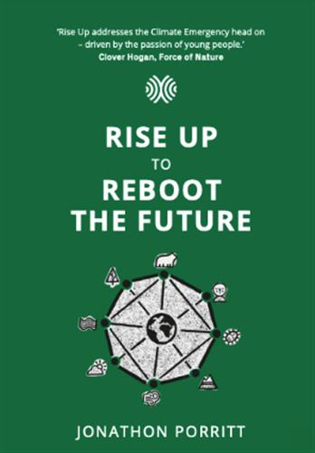
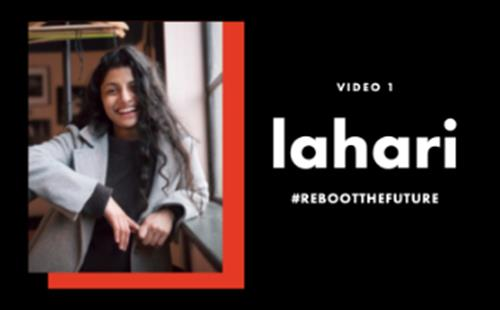
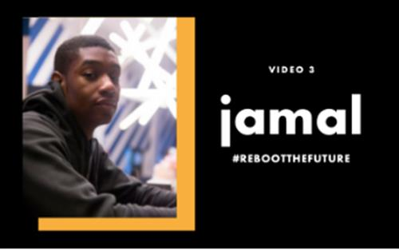
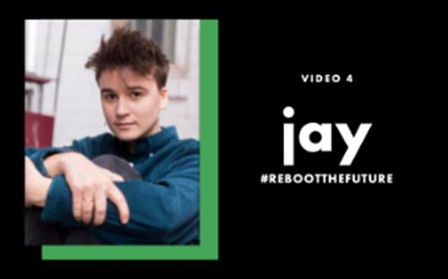
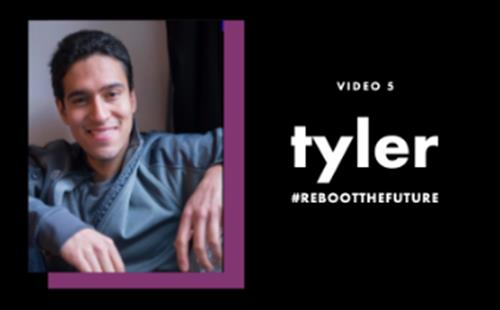

How will you reboot the future?
New campaign amplifies young voices ahead of major climate conference, COP-26
As the climate and social crises we face intensify, the voices of young people are rightly getting louder.
Forum for the Future and its Founder Director, environmentalist Jonathon Porritt, have partnered with UK-based NGO, Reboot the Future, to launch ‘How Will You Reboot the Future?’, a multi-media campaign set to engage 14-19 year old students to stimulate debate and action as we approach the 26th UN Climate Change Conference of the Parties (COP26) in Glasgow.
‘How Will You Reboot the Future?’ is a project comprising a specially commissioned book, film and classroom resources inspired by Jonathon Porritt’s lifelong campaigning work. The materials span the individual and collective experiences of young people who reflect on the tumultuous years 2021- 2025, as they map their way toward a sustainable future.

The book, ‘Rise Up to Reboot the Future’, is a Young Adult novella which tells the story of three young people looking back from 2026, reflecting on the political and personal events which transformed the politics of climate change over the next five years. Download Jonathon Porritt’s Rise Up to Reboot the Future e-book
Based on the book, an accompanying suite of five ‘Rise Up’ films tell the story of five young people as they describe the positive life choices they make in 2021, which make it possible for them to help shape a fairer, more sustainable world. Each film is designed to be watched individually or as part of whole, and are supported by a dedicated school resources pack, freely available to download now.

This short film tells the story of Lahari, a prospective law student in Mumbai, who, as someone with asthma, uses her platform to influence the law on air pollution.
View more
This short film tells the story of Erin, a teenager who is passionately protesting about the climate crisis as she watches her grandfather’s rural Norfolk home crumble into the sea.
View more

This short film tells the story of Jamal, a school student in inner-city London with a love of growing and cooking his own food, and a dream of becoming a chef.
View more

This short film tells the story of Jay, a teenager whose various approaches to speaking up and acting on the climate crisis are each effective in their own way.
View more

This short film tells the story of four young climate activists being interviewed by Tyler, a journalist reporting in 2025 from a climate summit. In the interviews, they each give advice to their younger selves.
View more
The full suite of resources includes:
-
Five short films(each 5-7 minutes long), which follow five young people from 2021 to 2025
-
Jonathon Porritt’s latest e-book, Rise Up to Reboot the Future,written specifically for this campaign
-
Five teaching guidesto support the films, providing discussion ideas, related resources and connections between the films and the e-book.
-
A book club companion guide to Rise Up to Reboot the Future, to support students in reading and discussing Jonathon Porritt’s inspirational and hope-filled new book.
View and download the resources
How to get involved
PHASE 1 Between now and June, educators as well as students, are invited to download the resources including films and the e-book, and use those to inspire new conversations on the climate crisis and support young people to take action.
PHASE 2 The campaign’s second phase will launch in July, when young people will be invited to express their positive visions of the future through a creative call to action: How Will You Reboot the Future? Young people, in the UK and globally, will respond in whatever way inspires them – whether that’s through a TikTok video, a painting, a song, or an Instagram post. Creative outputs will form a digital record used to influence decision-makers both pre and post COP-26.
Other ways to join the conversation
- Register on the Futures Centre and join our community working together to create a more sustainable future
- Spot and submit signals of change – the more we understand about how the world around us is changing right now, the better we can plan for the future we want. Read how spotting signals helps us create a more sustainable future and join us in signal spotting.